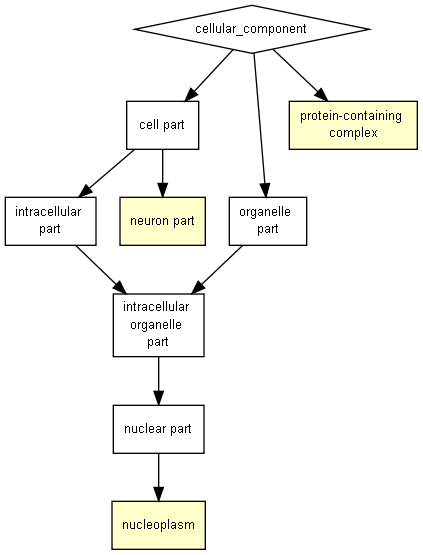

| > 10-3 | 10-3 to 10-5 | 10-5 to 10-7 | 10-7 to 10-9 | < 10-9 |

| GO term | Description | P-value | FDR q-value | Enrichment (N, B, n, b) | Genes |
| GO:0032991 | protein-containing complex | 1.02E-4 | 1.97E-1 | 2.52 (18319,5081,20,14) |
[+] Show genes |
| GO:0005654 | nucleoplasm | 6.2E-4 | 5.96E-1 | 2.98 (18319,3069,20,10) |
[+] Show genes |
| GO:0097458 | neuron part | 8.35E-4 | 5.35E-1 | 4.18 (18319,1535,20,7) |
[+] Show genes |
Species used: Homo sapiens
The system has recognized 19369 genes out of 20101 gene terms entered by the user.
19369 genes were recognized by gene symbol and 0 genes by other gene IDs .
192 duplicate genes were removed (keeping the highest ranking instance of each gene) leaving a total of 19177 genes.
Only 18319 of these genes are associated with a GO term.
The GOrilla database is periodically updated using the GO database and other sources.
The GOrilla database was last updated on Jun 23, 2018
This results page will be available on this site for one month from now (until Jul 25, 2018 ). You can bookmark this page and come back to it later.